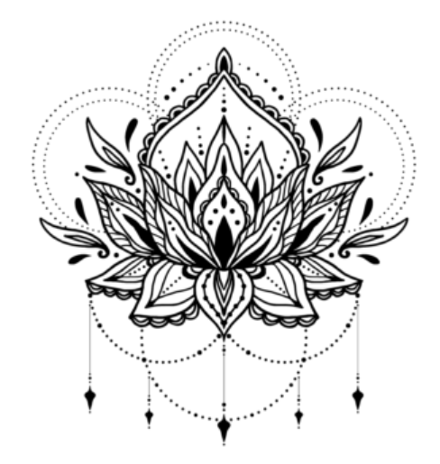

CORES
SECUNDÁRIAS
Explore o universo das cores, suas propriedades físicas, percepção visual e aplicações na arte, design e tecnologia.
Explore o universo das cores, suas propriedades físicas, percepção visual e aplicações na arte, design e tecnologia.

As cores secundárias são laranja, roxo e verde. Elas recebem essa denominação uma vez que surgem
da união de duas cores primárias, misturadas em iguais proporções. Essa é a forma tradicional de
se entender a relação entre as cores, desenvolvida há tempos pelo artista Leonardo da Vinci, o
cientista Isaac Newton e outros estudiosos. As três cores secundárias são:
Laranja = vermelho + amarelo
Verde = azul + amarelo
Roxo/Violeta = azul + vermelho
Tecnicamente, as cores secundárias possuem função de equilíbrio e transição entre as cores
primárias, sendo amplamente utilizadas em design, pintura, publicidade e composição visual para
criar contraste, harmonia e profundidade cromática.
Laranja = vermelho + amarelo
Verde = azul + amarelo
Roxo = vermelho + azul
Em tinta, as secundárias são laranja, verde e roxo. Já em telas digitais (RGB), as secundárias passam a ser ciano, magenta e amarelo.
Designers costumam combinar cores secundárias com suas cores complementares para destacar
elementos.
Roxo -- amarelo
Verde -- vermelho
Laranja -- azul
Simboliza energia, criatividade, entusiasmo,.
A cor laranja simboliza energia, criatividade, entusiasmo, vitalidade e alegria. Como uma cor quente resultante da mistura de vermelho e amarelo, ela estimula a mente, promove a comunicação, a sociabilidade e está associada ao sucesso e prosperidade. É uma cor vibrante que remete ao verão, calor e espontaneidade;
![]()
Simboliza Espiritualidade.
A cor roxo simboliza espiritualidade, mistério, criatividade e transformação. Historicamente ligado à nobreza e ao poder, este tom equilibra a estabilidade do azul com a energia do vermelho, sendo associado à sabedoria, sofisticação, luxo e introspecção. Transmite uma sensação de tranquilidade e convida à reflexão e ao autoconhecimento.

Simboliza Equilíbrio.
O verde é amplamente associado ao equilíbrio, harmonia, renovação e natureza. Como cor que representa o ponto de encontro entre o coração (emoções) e a mente, transmite sensações de calma, segurança e vitalidade. É frequentemente utilizado para evocar sustentabilidade, saúde e prosperidade.
MANDALAS COLORIDAS EM ESQUEMAS DE COMBINAÇÕES
Objetivo: aprender a manipular o Círculo Cromático nos esquemas de combinações de cores e
gerar exemplos materializados de cada um deles em todas as possibilidades.
Material: mandalas para pintar, lápis de cor.
Descrição: pintar mandalas prontas (ou desenhá-las), de acordo com cada Esquema de
Combinações de Cores, em todas as possibilidades. Por exemplo, pintar várias mandalas com três
cores análogas no círculo.
